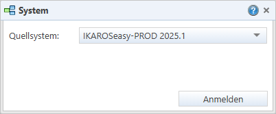

Elemente des Anmeldungsdialogs
•Listenfeld „Zielsysteme“: Erlaubt die Auswahl eines oder mehrerer Systeme, in denen ein Paket, Change oder Change Set installiert werden soll. Das Feld wird nur im Zusammenhang mit Transportaktionen angezeigt.
•Listenfeld „Quellsystem“: Erlaubt die Auswahl desjenigen Systems, aus dem die Artefakte zur Auswahl angeboten werden sollen. Das Feld wird bei Aufruf des Artefaktpaket-Assistenten bzw. vor der Auswahl eines Quellsystems angezeigt.
Varianten des Anmeldedialogs
Anmeldung an ein Quellsystem
Dialog zur Anmeldung an ein Quellsystem (z. B. beim Aufrufen des Artefaktpaket-Assistenten). Das Feld „Quellsystem“ ist deaktiviert, wenn der Change oder das Change Set bereits gespeichert sind.

Abb. 22: Dialog für Anmeldung an ein Quellsystem
Systemwahl bei Transport in Zielsystem
Dialog zur Anmeldung an einem oder mehreren Zielsystemen (z. B. beim Transport von Paketdateien, Changes oder Change Sets):
Abb. 23: Dialog für die Anmeldung an Zielsysteme
Beim Transport von Transportaufträgen (Menüpunkt „Transportplanung“ [Link]) wird das Zielsystem aus dem Transportauftrag übernommen und kann nicht geändert werden.

Abb. 24: Dialog für die Anmeldung bei Transport eines Transportauftrags